×
Level 1 - Movement
- Top left corner: This is your Game area. This is where lives. You can interact with by placing blocks into the Blockly area.
- Top right corner: This is the Blockly area where your commands (blocks) reside. You can drag and drop blocks inside the white area and when you hit the Run game button, will take action.
- Bottom left corner: This is the Instructions area. Here you will learn about the functionality of the blocks, your goals and information about new enemies.
- Bottom right corner: This is the Run game output area. Over this area you can see how many blocks you used, which types and how many times you reseted the game. You will also get a usefull tip in some cases.
Blocks Functionality:
- Block start (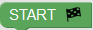): This is always the first block of your commands. Place this block first.
- Block move left (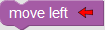): This block will move to the left by 100 pixels. 100 pixels is the distance between 2 stars.
- Block move right (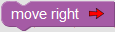): This block will move to the right by 100 pixels.
Level 2 - Jump
New Obstacles:
- Spikes (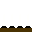). Spikes are dangerous and will hurt everyone who steps on them. A hurted explorer won't follow your commands anymore.
New Block:
- Jump (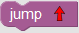). With the "jump" block you can tell to jump. If you want to jump and move (left or right) at the same time then use the Jump block first and under the Jump block use the move (left or right) block.
Attention: From now on every time you hit the Reset Game button, loses 10 score points.
Always Remember: moves 100 pixels at a time. The distance between 2 stars is 100 pixels.
Now it's time to clear this level!
Level 3 - Repeat 'n' times
New Obstacles:
- Alien (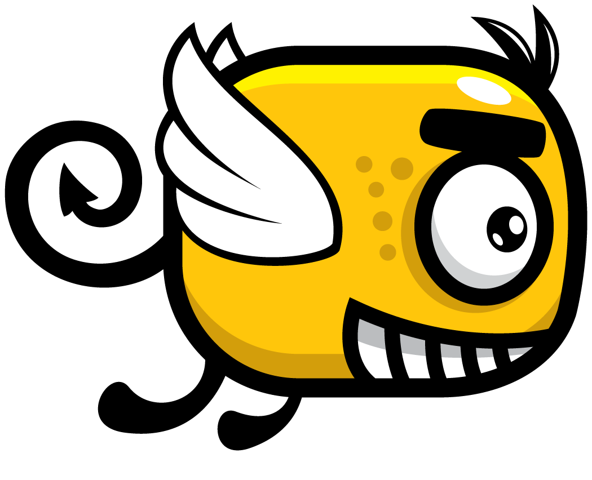). Aliens are attracted by the stars and they will attack anyone who gets near them.
New Block:
- Repeat 3 times (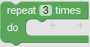). With the "repeat 3 times" block, as the name indicates you can repeat the same commands 3 times. You can change the number "3" to any number you like and the commands will be repeatd as many times as the number you placed inside the repeat block. For example, if you use repeat "2" times and inside the repeat block you place the "move right" block, then will move 2 stars to the right (200pixels).
- uses laser beam (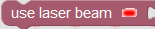). With this block you prepare to shoot a laser beam.
- shoot laser beam (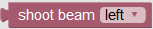). With this block you can guide at which direction to shoot the laser beam.
Attention: Every time you hit the Reset Game button, loses 10 score points.
Always Remember: moves 100 pixels at a time. The distance between 2 stars is 100 pixels.
Level 4 - Repeat While
New Obstacles:
- Wall (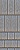). A wall is an obstacle that will block your path. You can brake a wall by attacking it many times. The new "repeat while wall is (broken or not broken)" command will help you brake the wall.
New Block:
- Repeat while wall is (broken or not broken) (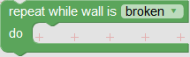). This block will help you brake the wall. You have two options (broken or not broken). Those options are called conditions. repeat while wall is (broken or not broken) will keep repeating the blocks you put inside it as many times as your condition is true. For example when you start this level the wall inside the game is "not broken". If you keep attacking the wall then it will eventually brake. So you can use the "repeat while wall is not broken" block and inside it put the "use laser beam" block to attack the wall many times. When the wall is broken your "repeat while wall is not broken" block will stop repeating the blocks you used inside it .
Attention 1: Every time you hit the Reset Game button, loses 10 score points.
Attention 2: If you don't place any blocks inside your repeat while wall is (broken or not broken) and your condition is true, then will keep going left and right with out to know what to do.
Always Remember: moves 100 pixels at a time. The distance between 2 stars is 100 pixels.
Level 5 - Repeat Until
New Block:
- Repeat until wall is (broken or not broken) (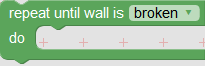). This block can help you brake the wall too. You have two options (broken or not broken). Remember those options are called conditions. "repeat until wall is (broken or not broken)" will keep repeating the blocks you put inside it as many times as your condition is not true. For example when you start this level the wall inside the game is "not broken". If you keep attacking the wall then it will eventually brake. So you can use the "repeat until wall is broken" block and inside it put use laser beam block to attack the wall many times. When the wall is broken your "repeat until wall is broken" block will stop repeating the blocks you used inside it .
Attention 1: Every time you hit the Reset Game button, loses 10 score points.
Attention 2: If you don't place any blocks inside your repeat until wall is (broken or not broken) and your condition is not true, then will keep going left and right with out to know what to do.
Always Remember: moves 100 pixels at a time. The distance between 2 stars is 100 pixels.
Level 6 - Simple If
New Blocks:
- if (condition) (). We learned that conditions can be either true or false. If the condition is true then the blocks you put inside the "if" block are executed once without repeating. If you put an "if" block inside a "repeat" block then the "if" block will be executed as many times as your repeat block.
- star has:"option" color (). This is the condition of your "if" block. With this block you can check if steps on a red (or green or blue) star. If steps on the color you selected then the condition of the "if" block becomes true and the blocks you have putted inside it are executed.
- collect "option" star (). With this block you can tell to collect the color you selected. must be on top of the colorful star in order to be collected. Collecting colorful stars is hard and that's why you tell the adventurer to collect the colorful star at the right time only. Otherwise you will waste a large amount of time.
Attention: Every time you hit the Reset Game button, loses 10 score points.
Always Remember: moves 100 pixels at a time. The distance between 2 stars is 100 pixels.